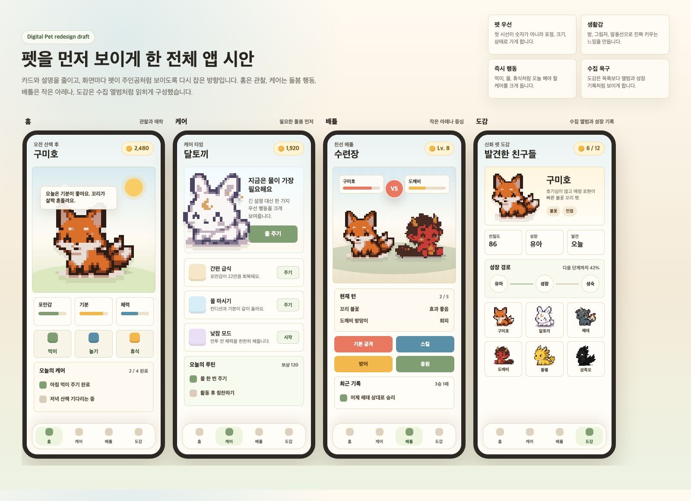

Previous UI Mock Archive
이전 디자인 시안 저장본입니다. 분위기와 펫 중심 배치는 참고하되, 현재 앱에 없는 기능은 구현하지 않는 전제로 보세요.
주의: 이 시안에는 현재 코드에 없는
놀기, 휴식, 수동 배틀 선택 버튼 등이 포함되어 있습니다.
Claude Code가 이 이미지를 참고할 때는 디자인 톤만 가져오고 기능은 현재 코드 기준으로 맞춰야 합니다.

가져갈 점
- 펫이 화면의 첫 시선에 크게 들어오는 구조
- 따뜻하고 돌보는 느낌의 배경과 카드 밀도
- 홈, 케어, 배틀, 도감의 분위기 차이
- AI 느낌을 줄이고 직접 키우는 감정이 보이는 톤
그대로 쓰면 안 되는 점
- 현재 없는 홈 액션:
놀기,휴식 - 현재 없는 수동 배틀 버튼:
기본 공격,스킬,방어,응원 - 현재 도감 기능보다 넓게 보이는 전체 수집형 UI
- 신규 기능을 추가하는 식의 디자인 변경